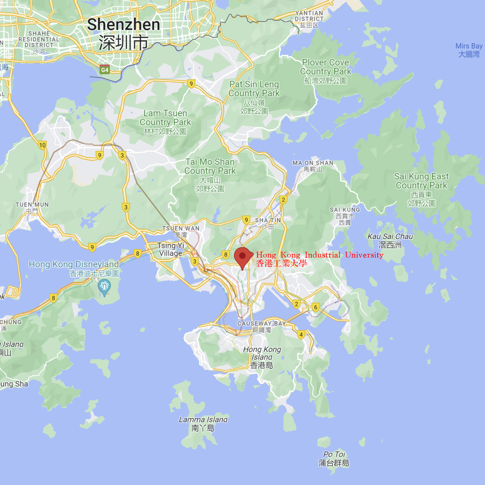

Hong Kong Industrial University
Hong Kong Industrial University
Welcome to Hong Kong Industrial University
Hong Kong Industrial University is a comprehensive public university located at Tat Chee Avenue, Kowloon, Hong Kong. The university was established in 1997 to provide high-quality education and research opportunities for Hong Kong and international students. The university's campus covers an area of about 500 hectares with excellent facilities and a beautiful environment.
The university offers undergraduate education in 11 disciplines: Physics, Chemistry, Biology, Materials Science and Engineering, Electronic Science and Technology, Cognitive Science, Computer Science and Technology, Biomedical Engineering, Electronics and Information Technology, Materials and Chemical Engineering, and Biology and Medicine. The School's teaching and research team comprises renowned scholars and experts from home and abroad committed to providing students with cutting-edge knowledge and skills.
Location
